#1360 Der Mann der Liberty Valance erschoss
Alternativ: The Man Who Shot Liberty Valance
Auszeichnungen: für 1 Oscars nominiert
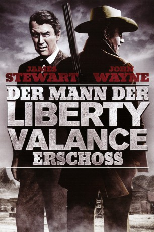 
 IMDB-Wertung: 8.1 / 10
IMDB-Wertung: 8.1 / 10  Metascore: 94
Metascore: 94 
Anwalt Ransom Stoddard wird auf seiner Reise in das Städtchen Shinbone vom berüchtigten Liberty Valance überfallen. Der hart gesottene Cowboy Tom Doniphon findet Stoddard und bringt ihn beim Ehepaar Ericson unter. Dort hilft der ausgeraubte Anwalt im Restaurant aus, um finanziell wieder auf die Beine zu kommen. Die hübsche Hallie, die im Restaurant bedient, verliebt sich in ihn. Stoddard will Valance mit friedlichen Mitteln das Handwerk legen, damit in der Gegend Recht und Ordnung herrschen. Das erweist sich aber als unmögliches Unterfangen, weil Valance nicht zurückweichen will. Als der Revolverheld in der Stadt auftaucht, scheint eine Konfrontation mit dem friedfertigen Ransom Stoddard unausweichlich.
Jahr: 1962
Dauer: 123 Minuten
FSK: 12
Land: USA Studio: A Paramount ReleaseTonspuren: DD2.0 - ,
Untertitel: Deutsch,
Auflösung: 1080p (1920x1080) Größe: 8130 MB
Genre: Drama, Western
Regisseur: John Ford
Drehbuch: James Warner Bellah, Willis Goldbeck, Dorothy M. Johnson
Soundtrack: Cyril J. Mockridge
Darsteller:
 John Wayne als Tom Doniphon
John Wayne als Tom Doniphon James Stewart als Ransom Stoddard
James Stewart als Ransom Stoddard Vera Miles als Hallie Stoddard
Vera Miles als Hallie Stoddard Lee Marvin als Liberty Valance
Lee Marvin als Liberty Valance- 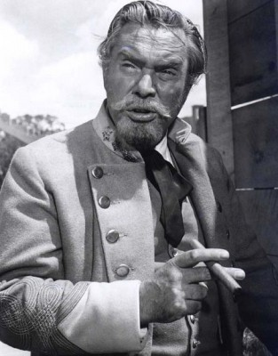 Edmond O'Brien als Dutton Peabody
 Andy Devine als Link Appleyard
Andy Devine als Link Appleyard- 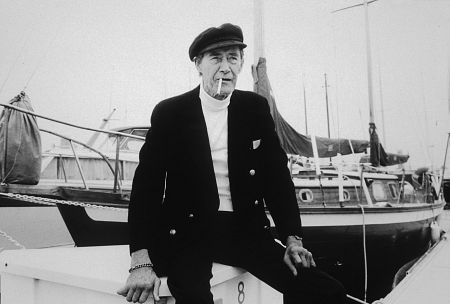 John Carradine als Maj. Cassius Starbuckle
 Jeanette Nolan als Nora Ericson
Jeanette Nolan als Nora Ericson John Qualen als Peter Ericson
John Qualen als Peter Ericson- 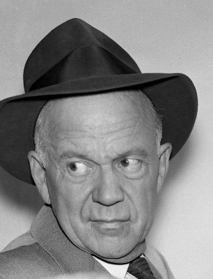 Willis Bouchey als Jason Tully - Conductor
 Carleton Young als Maxwell Scott
Carleton Young als Maxwell Scott Woody Strode als Pompey
Woody Strode als Pompey Denver Pyle als Amos Carruthers
Denver Pyle als Amos Carruthers- 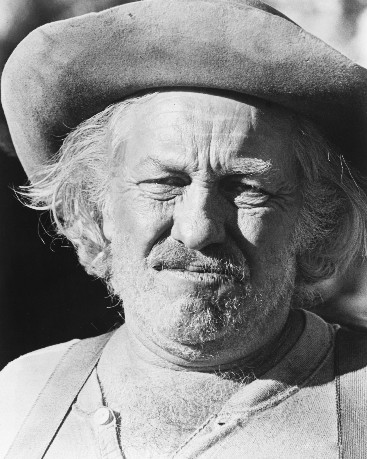 Strother Martin als Floyd
 Lee Van Cleef als Reese
Lee Van Cleef als Reese- 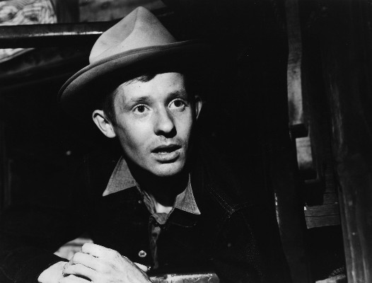 O.Z. Whitehead als Herbert Carruthers
- 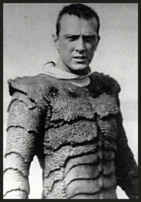 Tom Hennesy als Buck Langhorn , uncredited
- 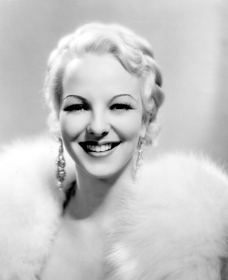 Anna Lee als Mrs. Prescott - Widow in Stage Holdup , uncredited
 Jack Perrin als Statehood Audience Member , uncredited
Jack Perrin als Statehood Audience Member , uncredited- Dorothy Phillips als Townswoman , uncredited
 'Snub' Pollard als Statehood Audience Member , uncredited
'Snub' Pollard als Statehood Audience Member , uncredited- Ken Murray als Doc Willoughby
- Robert F. Simon als Handy Strong
 Paul Birch als Mayor Winder
Paul Birch als Mayor Winder- Joseph Hoover als Charlie Hasbrouck - Reporter for 'The Star'
- Charles Akins als Townsman , uncredited
- Mario Arteaga als Henchman , uncredited
- 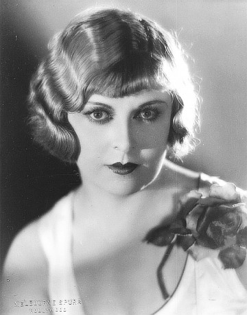 Gertrude Astor als Townswoman , uncredited
- Frank Baker als Gambler , uncredited
- Leonard Baker als Man , uncredited
- Oscar Blank als Townsman , uncredited
- Danny Borzage als Musician , uncredited
- Rudy Bowman als Townsman , uncredited
 Chet Brandenburg als Townsman , uncredited
Chet Brandenburg als Townsman , uncredited George Bruggeman als Townsman , uncredited
George Bruggeman als Townsman , uncredited- Dick Cherney als Statehood Audience Member , uncredited
 Noble 'Kid' Chissell als Townsman , uncredited
Noble 'Kid' Chissell als Townsman , uncredited- Russell Custer als Townsman , uncredited
- 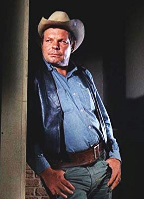 Larry Finley als Bar X Man , uncredited
- Shug Fisher als Kaintuck , uncredited
 Duke Fishman als Townsman , uncredited
Duke Fishman als Townsman , uncredited- Fritz Ford als Townsman , uncredited
- Ben Frommer als Cantina Bartender , uncredited
- 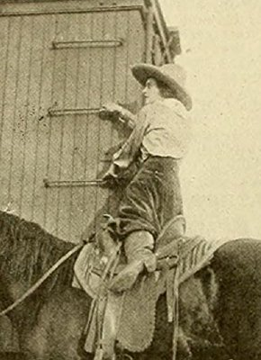 Helen Gibson als Townswoman , uncredited
 Herman Hack als Townsman , uncredited
Herman Hack als Townsman , uncredited Chuck Hamilton als Statehood Audience Member , uncredited
Chuck Hamilton als Statehood Audience Member , uncredited- Sam Harris als Statehood Audience Member , uncredited
 Chuck Hayward als Henchman , uncredited
Chuck Hayward als Henchman , uncredited William Henry als Gambler , uncredited
William Henry als Gambler , uncredited- Lars Hensen als Statehood Audience Member , uncredited
Datei: X:\HD-Western-Collections\John Wayne\Mann der Liberty Valance erschoss, Der (1962, FSK12, 1920x1080).mkv seit 26.06.2015
Festplatte: HD Eastern+Western
 Es gibt insgesamt 34 Filme in der Gruppe 'HD-Western-Collections\John Wayne'
Es gibt insgesamt 34 Filme in der Gruppe 'HD-Western-Collections\John Wayne'